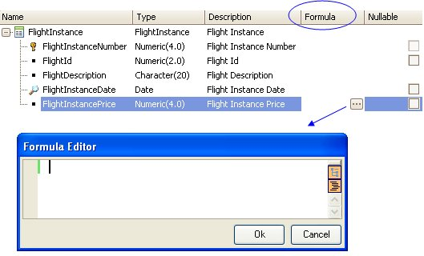

Global Formulas
A Global Formula, also known as "formula attribute" is an attribute to which you can assign an associated calculation. Thus GeneXus has the knowledge to calculate the formula wherever the attribute is mentioned.
Only an attribute can be defined as a global formula (not a variable). Moreover, the only variables allowed inside the formula expression are those visible in all the KB, in every object, that is, system variables (such as &today).
Where do you define an attribute as a global formula? In the Transaction structure, when defining its name and data type. It is also possible to specify a formula with the Formula Editor. Look at the following image:

The calculation itself, that is also known as formula itself, can be any horizontal, aggregate, or compound expression.
Global formula attributes are "virtual attributes" because they are not physically stored in a table by default (but you can change this if you want to, defining the attribute as redundant). In spite of this, for each object that references a global formula, GeneXus includes in its corresponding generated program the necessary code to calculate and display the result at runtime.
As it was said, global formula attributes aren't stored in a table. However, each global formula attribute has an associated table: the table that would belong to if it were not defined as a formula. In the above example, the associated table of FlightInstancePrice will be FLIGHTINSTANCE.
It represents the context of the formula. In other words, whenever the formula attribute is written, another attribute of the same table could have been written instead. That is, if the code is well programmed, at the moment the formula calculation triggers, you are positioned in a certain register of that table.
Videos
 What are formulas?
What are formulas?
Inline formulas